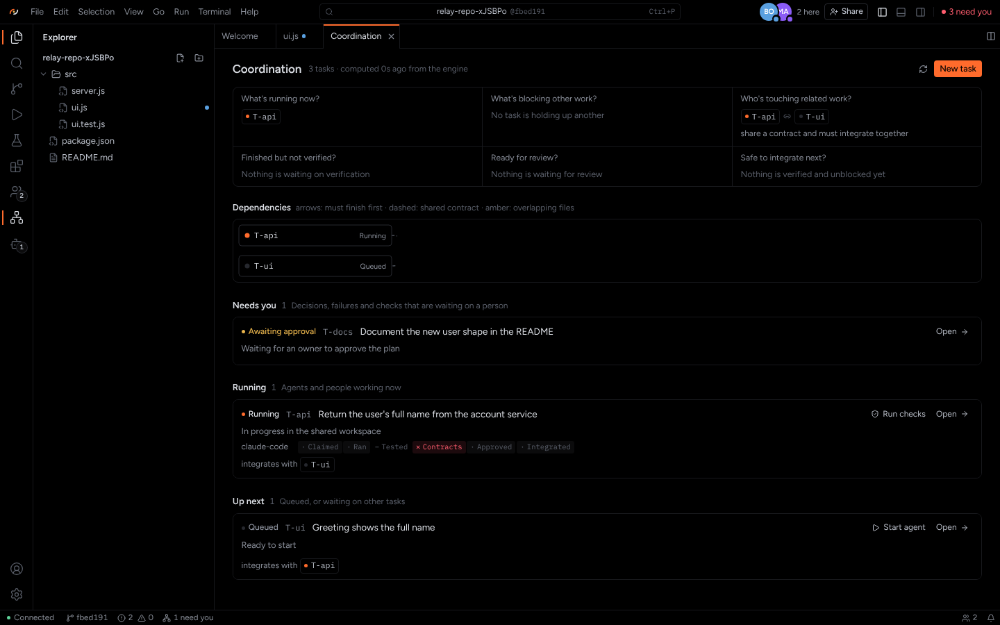
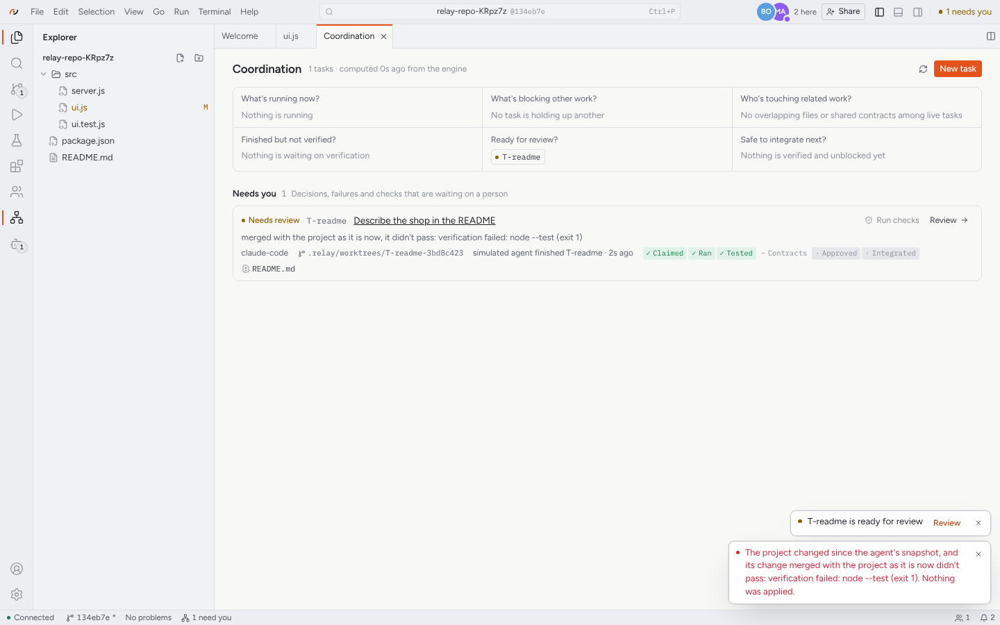
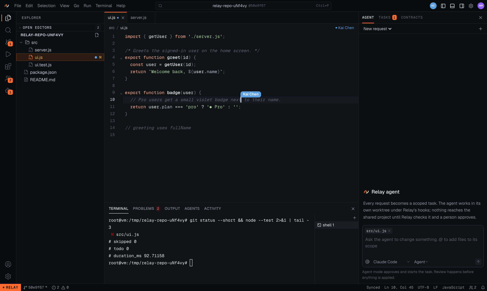
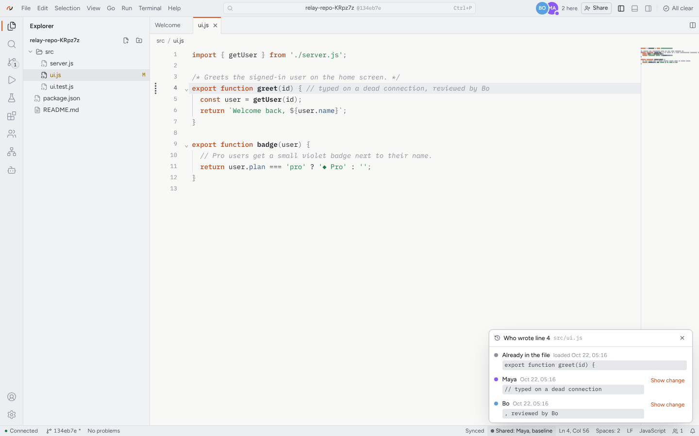

Every change must earn its way in.
Teams now ship code written by several people and several AI agents at once. Each change passes its own tests, Git merges them cleanly, and the project still breaks. Relay rehearses the changes together before anything is applied, blocks the break, and says why.
The problem, in one example
Agent A
Renames a field in the API: name becomes fullName. Its tests pass.
Agent B
Edits the greeting screen in a different file. It still reads name. Its tests pass.
Together
Different files, so Git sees no conflict. Merged, the project's tests fail. The break is found after it shipped.
With real Claude Code agents, this happened in 6 of 6 trials. Without Relay, the break was merged every time. With Relay, it was blocked every time and the project stayed unchanged. See it step by step.
How Relay works
- Tasks and contractsWork is split into tasks with a scope. Shared interfaces are versioned contracts that only people accept.
- Guarded agentsEach agent works in its own copy of the project. A hook stops edits outside its scope and fails closed.
- Relay's own evidenceRelay runs the checks itself. What an agent says it tested does not count.
- Check TogetherTasks that share a contract are rehearsed combined, on the project as it is now.
- ExplainA blocked rehearsal names the change, the line that still depends on it, and the failing test. Or says "likely" or "unknown" instead of guessing.
- A person approvesOnly a person applies. Relay checks nothing moved since the rehearsal.
What needs you, at a glance
What's running, what's blocking other work, who is touching related code, and what is safe to integrate next. All of it computed from Relay's engine, not from what agents report.

Nothing applied until it passes
When the project moved on since an agent started, Relay merges the change with the project as it is now and checks again. If that fails, nothing is applied, and you are told why.

People and agents, in one workspace
A browser IDE with the structure of VS Code: live shared editing, presence, and an agent panel where every request becomes a scoped task. Or stay in your own VS Code with Relay's extension.

Who wrote any line
Every line knows who wrote it, when, and with which edit: a person or an agent.

Where things stand
| Part | Status |
|---|---|
| Coordination engine: tasks, contracts, conflict rules, Relay-run checks, completion gate | Built and tested |
| Claude Code integration (guard hook and tools for agents) | Tested with the real Claude Code |
| Check Together and its explanation | Tested with real agents: 6 of 6 breaks blocked; the explanation was correct in all 3 trials that recorded it |
| Browser IDE, VS Code extension, command line | Built and tested with real editors |
| Other agents (Codex, Cursor) | Not yet |
| Use by independent teams | Not yet: the next milestone |
The trials used one designed scenario in a small project, with one agent product. They show that Relay catches and explains this kind of break when it happens, not yet how often it happens in real projects.